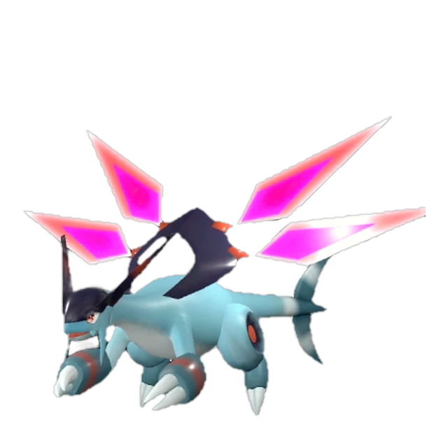
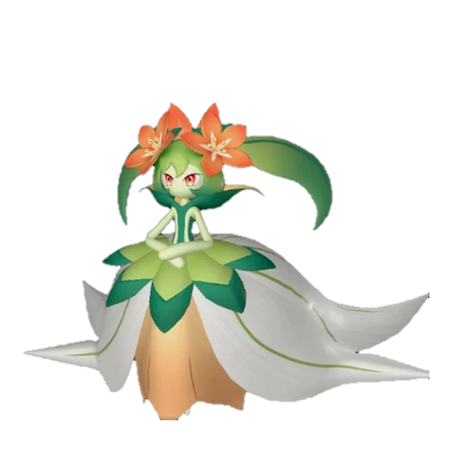
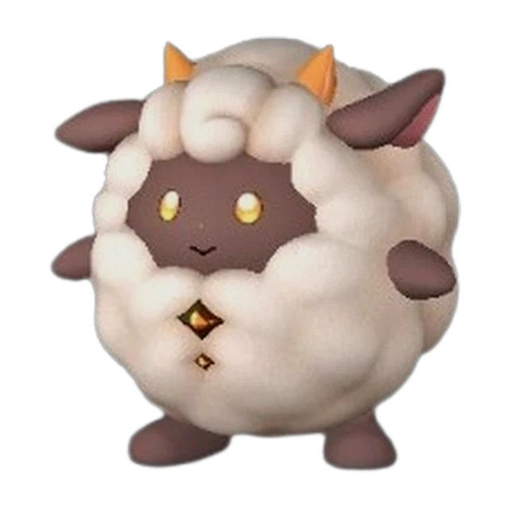
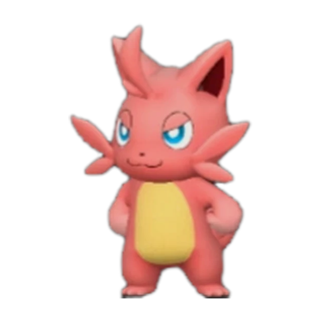
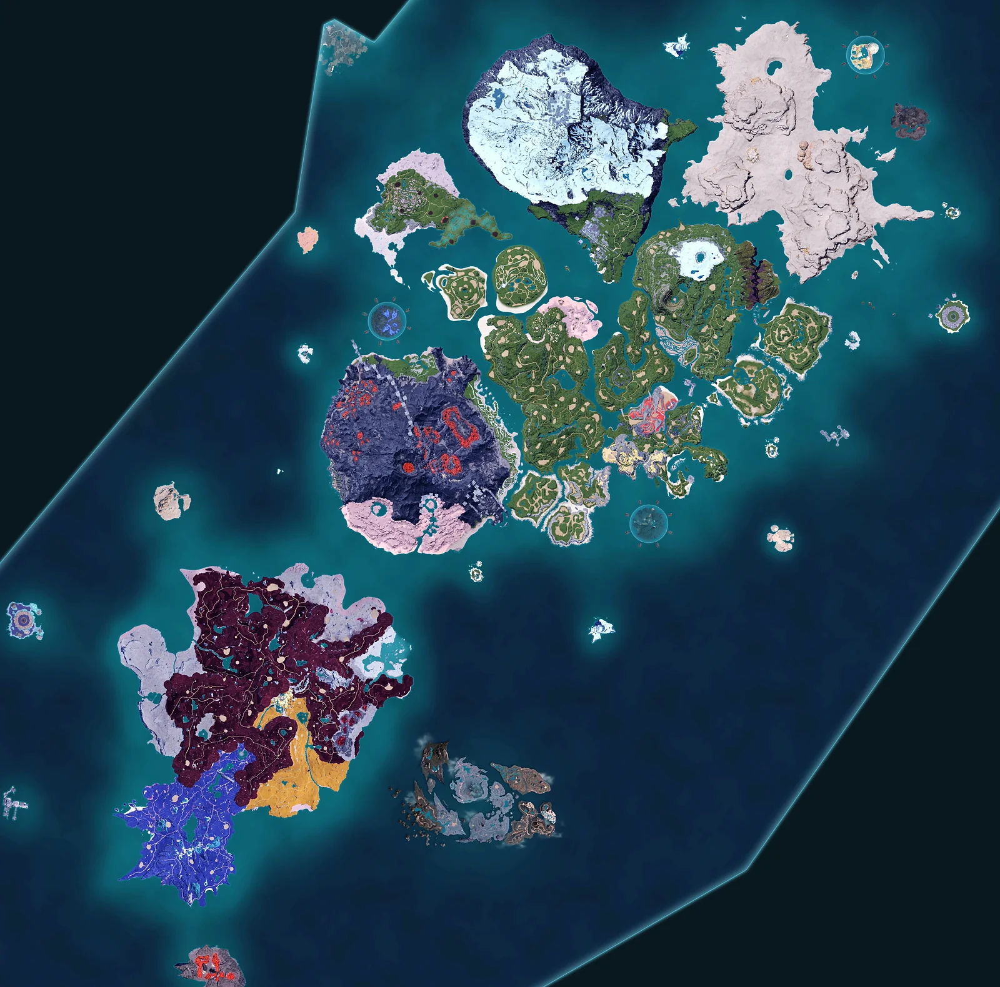
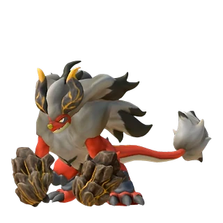
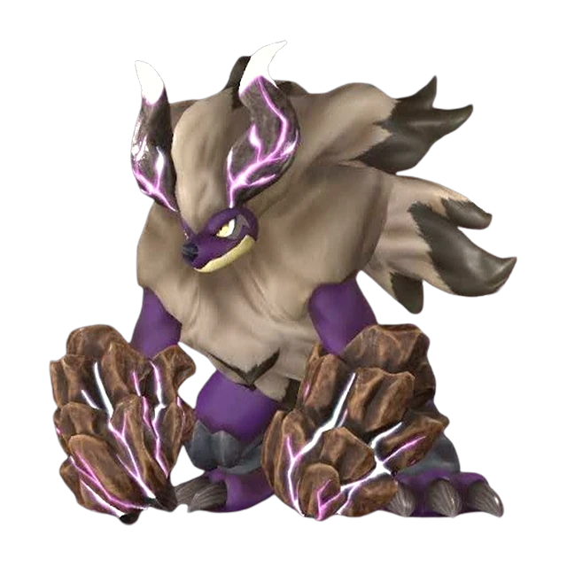

Palworld 1.0.5
Весь Палпагос в одном поиске
Палы, боссы, пассивки и разведение. Спроси как другу — ответ без рекламы и регистрации.
299палов
411пассивок
42боссов и рейдов
503ответа
Сегодня на острове
Пал дня
Анубис
Земля
6Ручная работа
6Добыча
130Атака


Карта
232 точек
Телепорты 134Альфы 71Запечатанные 19Башни 8
Разведение
Как вывести Анубиса

+
Блазамут + Дупин

Рейд
Блазамут Рю
ур. 55 · 512 680 HP
Ответ из базы
Кого поставить на ферму ягод?
Посев семян: Дандилорд 8, Офидия 7, Лилин 7, Сильванс 6, Микора 6, Карнибора 6Пассивки рабочим: Дьявольские руки, Виртуоз, Мастеровитый
Где их поймать Еда на скорость Сравнение

Анубис
Атака 130
Защита 100
VS
Джетрагон
Атака 140
Защита 120
Пассивки
411 навыков
Дьявольские рукиСкорость работы +90%ВиртуозСкорость работы +75%
Еда и баффы
38 блюд с баффами
Скорость работы, атака, защита — что приготовить.
Популярные палы
Все 299Наведи или нажми на пала со значком — он оживёт. Двигается только один, остальные стоят.